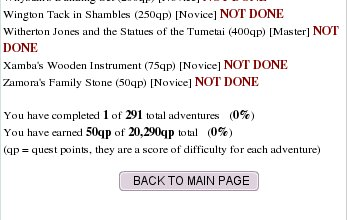

A great deal of your time on Horse Isle will be spent doing Quests—jobs or favors for NPCs (Non-Player Characters) ranging from deliveries and finding misplaced objects to solving mysteries and travelling the whole of the islands to find treasure or missing persons or animals. Some mini-games also count toward your total quest points.
To find out which quests are available to you, click the STATS button on the BUTTON PANEL, and then scroll down to Horse Isle Adventures And Quests and click VIEW LOG.
You will be shown a page such as the one at right. The quests are in alphabetical order, and your progress through them is marked by percentage of quests finished and number of quest points earned. Quest points are alloted according to the time and travel needed to complete the quest.
Quests are also ranked by Skill Level; that is, ranked according to how much figuring out, searching around and general brain-power a quest requires for completion. There are four levels:
Novice: Just follow the instructions carefully and you'll get there.
Intermediate: You may have to make some choices along the way, or search for something, but you will be given definite advice on how to proceed or where to search.
Advanced: Longer and more difficult puzzles which require considerable concentration and skill on your part to complete.
Master: Long, arduous and difficult puzzles, often with multiple possible endings, that require a great deal of patience, skill and concentration to complete. You should not attempt these quests unless you have sufficient time to spend on them and enough experience in the game generally to know what you're doing and what you're likely to need!
NOTE: Skill Level and Quest Points awarded are not necessarily linked. The Skill Level is provided so that you know what you're in for when you begin a quest!
Almost all quests end in the award of a prize, usually money. But do not be tempted to make the quest easier on yourself by buying the items required to finish it from other players! Doing so generally results in a loss of money at the end of the quest; one particularly time consuming and difficult quest will net you $50,000 at the end, but if you buy your supplies, then between supplies and the cost of travel you will end up spending $65,000 or more to complete it!
GENERAL HINTS FOR QUESTING
Keep notes! Write down who gave you the quest and where they live, and what they want. It is extremely annoying to other players when lazy questers repeatedly ask for instructions that NPCs have already given them!
Be Patient! Horse Isle is not a competition! You don't have to complete every quest immediately, and you don't have to be as advanced as everyone else. You'll get there eventually, so just slow down and think.
Use all your tools! Sometimes when you have to search for an object, the tool that comes most immediately to mind is not the one you need. Just because something is lost in the forest doesn't mean it's necessarily on the forest floor. Squirrels climb!